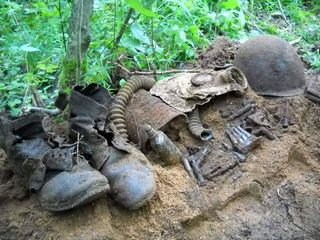
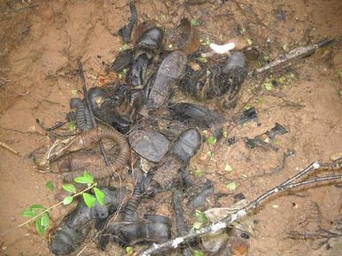
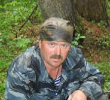

|
Мы были солдатами
«21.02.1942 г.
158 стрелковая дивизия с утра атакует Холмец и прилегающие к нему высоты. В небе господствует вражеская авиация.
875 стрелковый полк ведет борьбу за овладение снежным валом Сев. Вост. окраины Холмеца.
22.02.1942г.
Бои за Холмец носят ожесточенный характер. Сильный пулеметно-минометный огонь и беспрерывные бомбардировки с воздуха заставили части отойти на исходное положение (выписка из ЖБД 158 сд).
Вокруг меня одна смерть... Я один живой... в снегу на трескучем морозе... мне уже не хочется стрелять, хочется одного - конца мучений. Я не могу даже приподнять голову от земли, а каску ненавижу, ее видно издалека. Хочу слиться с землей, хочу, чтобы каска оказалась вдруг шапкой-невидимкой из добрых сказок, что рассказывали мне в детстве.
Почему он стреляет и стреляет, и стреляет? Там, на высотке Храм. Помолиться бы на Святую церковь... только сейчас она черна и холодна. Ссутулившись, скорбит о нас... Островок надежды в пустыне ужаса... Почему Господь допустил это? Справа от меня уткнулись в красное от крови снежное покрывало Ваня Тюрин и Коля Мещеряков - бывшие автозаводцы, товарищи, друзья. И не существует больше для них этого невыносимого мороза, страха. боли и... меня. Убиты... нет! Просто спят сном спокойным. Спят сном вечным... Спят... А я? И светлое неудержимое чувство долга, справедливости и... ярости не поднимет уже нас в атаку. Чувств не осталось, как не осталось и НАС...
Я теперь один на снежном валу у Холмеца, перед Святой церковью на проклятой войной земле. Я чувствую как Смерть, бродившая по своим владениям, остановилась за моей спиной, любуется на меня, улыбается... забирается костлявыми ледяными руками под одежду… то шепчет что-то страшное в уши, то смеется... или это разбушевавшаяся зима сводит меня с ума!? Я не чувствую ног. В этих хваленых армейских ботинках так же холодно, как и без них. Проклятые неудобные колодки... Невольно усмехнулся, когда-то я так гордился, примеряя их!
И зачем они мне? Вымучили меня. Зачем они? Зачем тут я? И пулеметчик? Притих... Да, пулеметчики «Гросс Дойч» хорошо знают свое дело... Вокруг меня ни стона, ни крика - мертвая тишина. Три батальона уже поклонились Куполам. Видит ли Всевышний все это? Видит ли меня? Слышит ли? Господи, обрати на меня свой взор! Дай уцелеть, дай выжить в жестоких сражениях, спаси и помоги... Не дай еще одной матери рыдать о не вернувшемся сыне. Прошу. Молю! Тишина... Быть может, Бог сейчас на другом краю земли?...
Покинул свою Холмецкую обитель, отдал ее в руки сытых врагов, топчущих родные края. Тишина... Никто не призовет: «В АТАКУ!». Да и кто теперь откликнется!? Москвичей-ополченцев, слесарей, фрезеровщиков, мастеров забрала в одночасье старуха-война, извела и похоронила без почестей в Холмецкой мёрзлой земле. Отчаяние... отчаяние сковало мое сознание. И уже не ощущаю холода... двигаться вперед? Куда вперед!? Яне могу подняться, даже пошевелиться нет сил! А винтовка? Винтовка!.. Ну какой с нее толк в замерзших не слушающихся пальцах?!. Тишина... А хочу ли я дожить до окончания войны? Хочу ли вновь и вновь убивать под крики «УРА!»? Хочу ли видеть, как один за другим падают мои друзья? Хочу ли жить со страшной раной в сердце и лицами убитых однополчан в памяти? Яне хочу даже завтрашнего дня! Только покоя... Покоя сейчас же, сию минуту... Боже, скорее бы все закончилось... Мне суждено умереть. Я с этой мыслью смирился. Жаль лишь, что ни раньше, ни перед боем не нашел комсорга. Где он сейчас? Наверное, тоже «принял обряд»?... Нет никого... Я один... Хочу умереть, умереть героем - для матери... не безымянным солдатом - для тех, кого защищаю... И комсомольцем, в чьи ряды я так и не успел вступить. Слышишь ли ты, Господи, мои мольбы? Мама! Мама, я знаю, ты-то уж точно слышишь меня! Ты слышишь, ведь ты мать! Я жив, но так далеко от тебя. Я скоро увижу тебя с небес, а потом всегда буду рядом. Смерть будет хранить мой сон, а я буду хранить тебя, мама...
И Смерть шевельнулась за моей спиной. Я с трудом открыл глаза и повернул голову. Нет, то была не моя смерть! Не моя... Медленно и тяжело дыша, ко мне подползал Рашид - наш санитар. Живой... живой! Я смотрю на него, как на чудо, пытаюсь что-то сказать, и... не успеваю... Вместе со мной очнулся от дум и пулеметчик. «Немецкая Машина» сбоев не дает... санитар, добравшийся наконец до меня, уткнулся в мой бок и затих. Судорожно переворачиваю его на спину и запихиваю окоченевшие руки Рашиду за пазуху к уходящему теплу.
Смерть ласково своим теплым саваном согревает мои ладони и зовет меня к себе... «Святой Гюнтер» с вершины звонницы «окрестил» пулеметной очередью. Он не щадил даже погибшего уже санитара. Что ему до правоверного мусульманина? Затявкали немецкие пехотные минометы, снова и снова смешивая с землей, уже погибший 875полк. Я окинул взором тела, если их еще можно назвать телами. Всего лишь мишени для врага, но друзья для меня. Иван, Коля, Рашид и остальные, с кем шел в бой. Они не предали, они были и остались рядом.
Рядом... и мне теперь не страшно... Пули с противным визгом рвут землю... Господи, я хочу перекреститься! Немец, дай же передышку! Словно услышав меня, пулеметчик не торопясь, со знанием дела, поправил прицел, давая мне возможность подняться - никто не заставит меня встретить смерть на коленях!... Длинная трассирующая очередь ослепила глаза прощальным фейрверком и... темнота... Пулю, убившую меня, я не услышал... Смерть бережно укрыла меня снежным покрывалом.
Сергей Виноградов.
д. Холмец Оленинского района
Имена и события в рассказе реальные. |